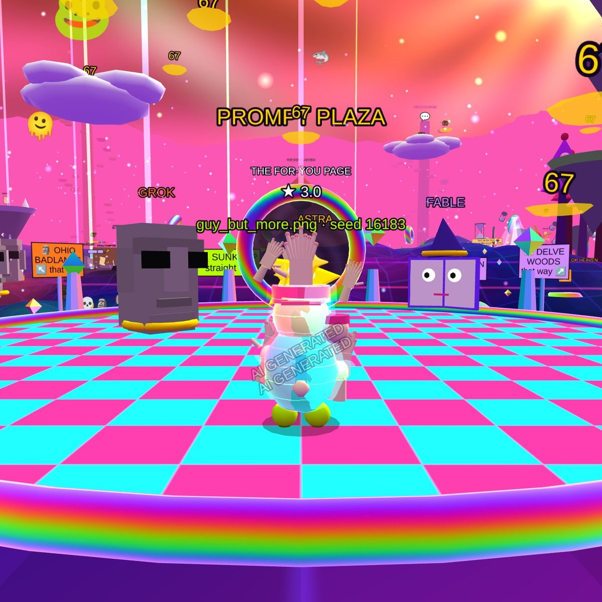
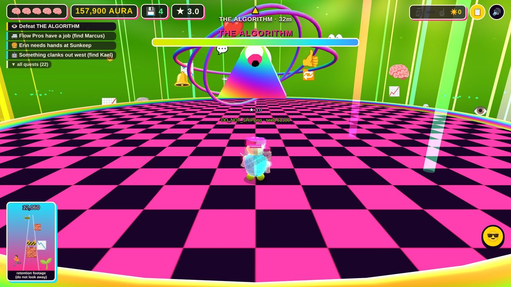
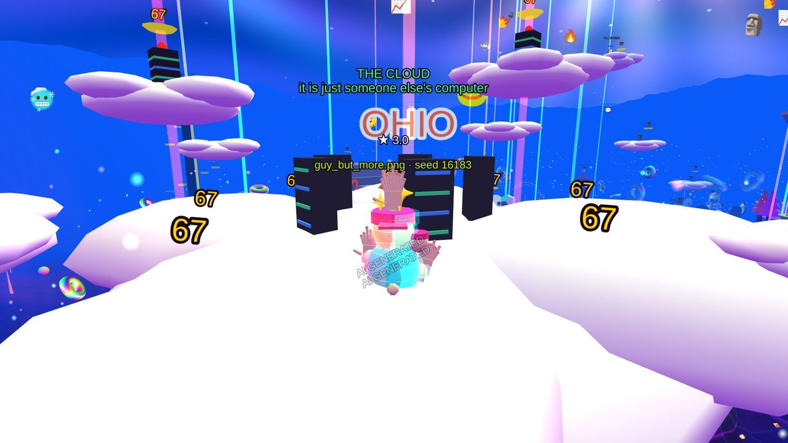
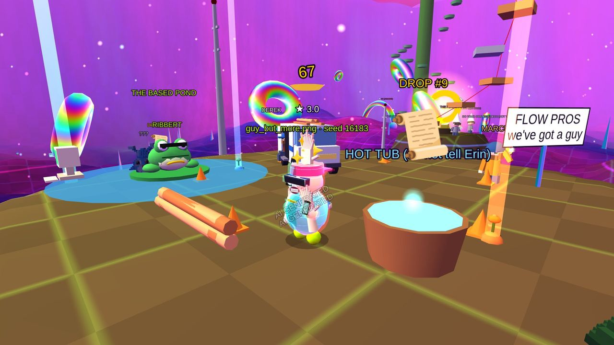
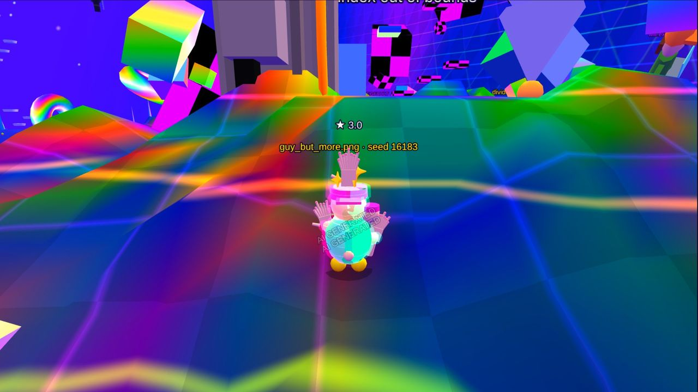

<title>Grok Fable Astra Sell Sheet</title>
<meta name="claude:viewport-fit-sides" content="cover">
<link rel="preconnect" href="https://fonts.googleapis.com">
<link rel="stylesheet" href="https://fonts.googleapis.com/css2?family=Bungee&family=Rubik:ital,wght@0,400;0,600;0,800;1,600&display=swap">
<style>
/* Layout: the same sheet as Guttercrown's, read top to bottom: a full-bleed frame carries the title, then the pitch,
   the numbers, three reasons it sells, the frames, and the facts. Palette is the game's own: void purple and four loud inks. */
:root {
  color-scheme: dark;
  --pit: #150a26;          /* page: the void behind the plaza */
  --stone: #24103f;        /* raised panels */
  --line: #43286b;         /* rules and borders */
  --parch: #f4eafb;        /* body text */
  --parch-dim: #bfa9d6;    /* secondary text */
  --gold: #ffd400;         /* aura */
  --bronze: #19e3ff;       /* frames */
  --blood: #ff2e88;        /* the loudest colour */
  --title: 'Bungee', 'Arial Black', Impact, sans-serif;
  --caps: 'Rubik', system-ui, sans-serif;
  --body: 'Rubik', system-ui, -apple-system, 'Segoe UI', sans-serif;
}
* { box-sizing: border-box; }
body { background: var(--pit); color: var(--parch); font-family: var(--body); font-size: 17px; line-height: 1.55; }
.wrap { max-width: 1080px; margin: 0 auto; padding-left: max(16px, env(safe-area-inset-left, 0px)); padding-right: max(16px, env(safe-area-inset-right, 0px)); }
img { display: block; max-width: 100%; height: auto; }
h1, h2, h3 { margin: 0; text-wrap: balance; }
p { margin: 0; }

/* hero */
.hero { position: relative; overflow: hidden; border-bottom: 2px solid var(--bronze); }
.hero img { width: 100%; aspect-ratio: 3 / 2; max-height: 640px; object-fit: cover; object-position: 50% 40%; }
.hero::after { content: ""; position: absolute; inset: 0; background: linear-gradient(180deg, rgba(21,10,38,.55) 0%, rgba(21,10,38,0) 30%, rgba(21,10,38,0) 42%, rgba(21,10,38,.95) 100%); pointer-events: none; }
.hero-text { position: absolute; inset: auto 0 0 0; z-index: 1; padding-block: 0 28px; }
.presents { font-family: var(--caps); font-size: 13px; letter-spacing: .32em; text-transform: uppercase; color: var(--parch-dim); }
.logo { font-family: var(--title); font-weight: 400; font-size: clamp(40px, 8.6vw, 98px); line-height: .92; text-transform: uppercase; color: #ff8a3d;
  filter: drop-shadow(3px 3px 0 #12002a) drop-shadow(0 0 22px rgba(0,0,0,.6)); }
.logo span { color: #d9a8ff; } .logo i { font-style: normal; color: var(--bronze); }
.ribbon { display: inline-block; margin-top: 10px; background: #b6ff00; color: #12002a; font-family: var(--caps); font-weight: 800; font-size: 13px; letter-spacing: .1em; text-transform: uppercase; padding: 6px 16px; clip-path: polygon(0 0, 100% 0, 97% 50%, 100% 100%, 0 100%, 3% 50%); }

/* pitch */
.pitch { padding-block: 44px 8px; display: grid; grid-template-columns: 1.35fr 1fr; gap: 40px; align-items: start; }
.pitch > * { min-width: 0; }
.logline { font-size: 25px; line-height: 1.32; color: #fff; font-weight: 600; }
.logline em { color: var(--gold); font-style: normal; }
.pitch .more { margin-top: 16px; color: var(--parch-dim); max-width: 62ch; }
.quote { border-left: 3px solid var(--blood); padding-left: 18px; font-style: italic; font-size: 19px; color: var(--parch); }
.quote cite { display: block; margin-top: 10px; font-style: normal; font-family: var(--caps); font-size: 12px; letter-spacing: .18em; text-transform: uppercase; color: var(--parch-dim); }

/* numbers: these are the real counts from the build */
.ledger { margin-block: 40px; border-top: 1px solid var(--line); border-bottom: 1px solid var(--line); display: grid; grid-template-columns: repeat(6, 1fr); }
.ledger div { padding: 18px 10px; text-align: center; border-left: 1px solid var(--line); }
.ledger div:first-child { border-left: 0; }
.ledger b { display: block; font-family: var(--title); font-weight: 400; font-size: 40px; line-height: 1; color: var(--gold); font-variant-numeric: tabular-nums; }
.ledger span { display: block; margin-top: 6px; font-family: var(--caps); font-size: 11.5px; letter-spacing: .14em; text-transform: uppercase; color: var(--parch-dim); }

/* three reasons */
.eyebrow { font-family: var(--caps); font-weight: 800; font-size: 13px; letter-spacing: .2em; text-transform: uppercase; color: var(--blood); margin-bottom: 8px; }
h2 { font-family: var(--title); font-weight: 400; font-size: 34px; line-height: 1.08; color: #fff; text-transform: uppercase; }
.why { display: grid; grid-template-columns: repeat(3, 1fr); gap: 28px; margin-top: 22px; }
.why > div { min-width: 0; }
.why h3 { font-family: var(--caps); font-size: 18px; font-weight: 800; color: var(--gold); margin-bottom: 8px; }
.why p { color: var(--parch); font-size: 16.5px; }

/* frames */
.frames { margin-top: 46px; display: grid; grid-template-columns: 1.5fr 1fr; grid-template-rows: auto auto; gap: 10px; }
.frames figure { margin: 0; position: relative; border: 1px solid var(--bronze); overflow: hidden; background: var(--stone); }
.frames figure:first-child { grid-row: span 2; }
.frames img { width: 100%; height: 100%; object-fit: cover; }
.frames figcaption { position: absolute; left: 0; right: 0; bottom: 0; padding: 26px 12px 8px; background: linear-gradient(transparent, rgba(18,0,42,.92)); font-size: 15px; color: #fff; }
.frames2 { margin-top: 10px; display: grid; grid-template-columns: repeat(3, 1fr); gap: 10px; }
.frames2 figure { margin: 0; position: relative; border: 1px solid var(--bronze); overflow: hidden; }
.frames2 img { aspect-ratio: 3 / 2; object-fit: cover; width: 100%; }
.frames2 figcaption { position: absolute; left: 0; right: 0; bottom: 0; padding: 22px 10px 7px; background: linear-gradient(transparent, rgba(18,0,42,.92)); font-size: 14.5px; color: #fff; }

/* facts */
.facts { margin-block: 48px 40px; display: grid; grid-template-columns: 1fr 1fr; gap: 36px; }
.facts > * { min-width: 0; }
dl { margin: 0; display: grid; grid-template-columns: max-content 1fr; gap: 8px 18px; }
dt { font-family: var(--caps); font-size: 12.5px; letter-spacing: .14em; text-transform: uppercase; color: var(--parch-dim); padding-top: 4px; }
dd { margin: 0; }
.audience li { margin-bottom: 6px; }
.audience ul { margin: 10px 0 0; padding-left: 20px; }
.play { display: inline-block; margin-top: 20px; font-family: var(--caps); font-weight: 800; letter-spacing: .1em; text-transform: uppercase; font-size: 14px; color: #12002a; background: var(--gold); padding: 12px 22px; border: 2px solid #12002a; text-decoration: none; box-shadow: 4px 4px 0 var(--blood); }
.url { margin-top: 10px; font-size: 15px; color: var(--parch-dim); overflow-wrap: anywhere; }
.url span { color: var(--parch); user-select: all; }
.hero .play { margin-top: 16px; }
.tip { margin-top: 10px; font-size: 15px; color: var(--parch); text-shadow: 0 1px 4px #000; }
.play:focus-visible { outline: 3px solid #fff; outline-offset: 3px; }
footer { border-top: 1px solid var(--line); padding-block: 18px 30px; font-family: var(--caps); font-size: 12px; letter-spacing: .14em; text-transform: uppercase; color: var(--parch-dim); display: flex; flex-wrap: wrap; gap: 8px 24px; justify-content: space-between; }

@media (max-width: 820px) {
  .pitch, .facts { grid-template-columns: 1fr; gap: 26px; }
  .why { grid-template-columns: 1fr; gap: 20px; }
  .ledger { grid-template-columns: repeat(3, 1fr); }
  .ledger div:nth-child(4) { border-left: 0; }
  .ledger div:nth-child(n+4) { border-top: 1px solid var(--line); }
  .frames { grid-template-columns: 1fr; }
  .frames figure:first-child { grid-row: auto; }
  .frames2 { grid-template-columns: 1fr; }
  .hero img { aspect-ratio: 4 / 5; }
  .logline { font-size: 23px; }
  h2 { font-size: 27px; }
}
</style>

<header class="hero">
  
  <div class="hero-text"><div class="wrap">
    <div class="presents">North Coast Studios presents</div>
    <h1 class="logo">Grok <span>Fable</span> <i>Astra</i></h1>
    <div class="ribbon">The Slopventure · Ultimate Definitive Edition (Real)</div>
    <div><a class="play" href="https://claude.ai/artifact/HeBBfxtQ7BCxjN6DNrLWDS" target="_blank" rel="noopener">Play it now, free in your browser</a></div>
    <p class="tip">On a phone, turn it sideways. A controller works too.</p>
  </div></div>
</header>

<main class="wrap">
  <section class="pitch">
    <div>
      <p class="logline">A 3D platform adventure through <em>a world made entirely of AI slop</em>: farm aura, beat the Algorithm, touch grass, then climb a mountain of memes while the rot counter reads one million.</p>
      <p class="more">You jump, dash, hook and poop-boost across twenty-six places built from clashing gradients and emoji, meeting a cast borrowed from every other North Coast game. The joke is that it looks generated in 0.4 seconds. The game underneath is a real collect-everything platformer with a start, three escalating endings and about six hours of things to find.</p>
    </div>
    <blockquote class="quote">This game was generated in 0.4 seconds and it shows. Hands are hard. Delve responsibly.<cite>The title screen ticker</cite></blockquote>
  </section>

  <div class="ledger" role="list">
    <div role="listitem"><b>26</b><span>places to explore</span></div>
    <div role="listitem"><b>67</b><span>67s to collect</span></div>
    <div role="listitem"><b>63</b><span>checklist goals</span></div>
    <div role="listitem"><b>15</b><span>buddies to befriend</span></div>
    <div role="listitem"><b>8</b><span>fetch towers</span></div>
    <div role="listitem"><b>x1M</b><span>rot at the summit</span></div>
  </div>

  <section>
    <div class="eyebrow">Why it sells</div>
    <h2>It looks like a mistake. It plays like a platformer.</h2>
    <div class="why">
      <div><h3>Every screenshot is a clip</h3><p>A hero that re-renders itself with a new filename and seed, an AI-generated watermark on its chest, a rot counter that hits x1000 and keeps going. People will post it to ask what they are looking at.</p></div>
      <div><h3>A real moveset under the joke</h3><p>Double jump, one poop boost per jump, a dash, a prompt hook that pulls you to platforms, and three forms: frog, rock and cloud. Eight towers, a red-string climb and Meme Mountain are built to need all of them.</p></div>
      <div><h3>A crossover that feeds the catalogue</h3><p>Marcus and Derek’s van, Erin, Will and Louie from Sunkeep, lil Bottie and Kael, King Bibi at a podium, an Oracle of Time. Each has a place, a quest and a tower. Anyone who likes one of them has a reason to try their own game.</p></div>
    </div>
  </section>

  <div class="frames">
    <figure><figcaption>THE ALGORITHM, on the For-You Page.</figcaption></figure>
    <figure><figcaption>The Cloud. It is just someone else’s computer.</figcaption></figure>
    <figure><figcaption>The filter is gone: rot x1000.</figcaption></figure>
  </div>
  <div class="frames2">
    <figure><figcaption>The Slop Factory makes levels out of your data.</figcaption></figure>
    <figure><figcaption>The Flow Pros job site, and a van you can drive.</figcaption></figure>
    <figure><figcaption>The Corrupted Sector, rebuilt from a new seed each visit.</figcaption></figure>
  </div>

  <section class="facts">
    <div>
      <div class="eyebrow">The facts</div>
      <dl>
        <dt>Genre</dt><dd>3D platform adventure and collect-a-thon, played for laughs</dd>
        <dt>Players</dt><dd>One</dd>
        <dt>Plays on</dt><dd>Desktop browser, phone (touch) and controller, one build for all three</dd>
        <dt>Length</dt><dd>About an hour to the first ending; an estimated five to seven hours to tick off everything (not yet timed with a real player)</dd>
        <dt>Audience</dt><dd>Teens and up: crude humour, internet in-jokes, fast flashing colours (not yet rated)</dd>
        <dt>Stage</dt><dd>Playable start to finish, built in one day, not yet played on a real phone or pad</dd>
        <dt>Studio</dt><dd>North Coast Studios</dd>
      </dl>
    </div>
    <div class="audience">
      <div class="eyebrow">Who it is for</div>
      <p>People who send each other the worst thing they saw online today.</p>
      <ul>
        <li>Players who like a collect-everything platformer and will chase all sixty-seven 67s.</li>
        <li>Streamers and clippers who want a game that is funny with the sound off.</li>
        <li>Anyone who already knows Marcus, Derek or lil Bottie from the other games.</li>
      </ul>
      <a class="play" href="https://claude.ai/artifact/HeBBfxtQ7BCxjN6DNrLWDS" target="_blank" rel="noopener">Play the latest build</a>
      <p class="url">Desktop, phone or controller: <span>claude.ai/artifact/HeBBfxtQ7BCxjN6DNrLWDS</span></p>
      <p class="url">The title uses another company’s product name and is not cleared for sale. See the State of the Game report.</p>
    </div>
  </section>
</main>

<footer class="wrap">
  <span>Grok Fable Astra · North Coast Studios</span>
  <span>Frames are captured from the running game</span>
</footer>
